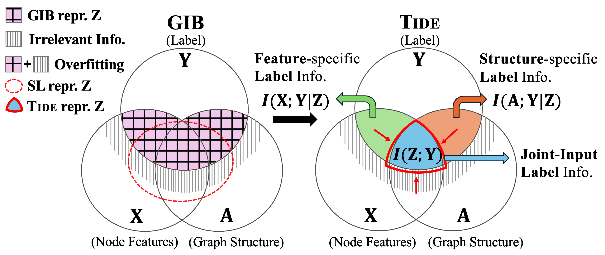

01

ICML 2026
What Information Matters? Graph Out-of-Distribution Detection via Tri-Component Information Decomposition
Danny Wang, Ruihong Qiu, Zi Huang
We propose Tide, a tri-component information decomposition framework for graph OOD detection that preserves shift-indicative, label-relevant joint signals.
+Abstract
Graph neural networks are widely used for node classification, but they remain vulnerable to out-of-distribution (OOD) shifts in node features and graph structure. Prior work established that methods trained with standard supervised learning (SL) objectives tend to capture spurious signals from either features and/or structure, leaving the model fragile under distributional changes. To address this, we propose Tide, a novel and effective Tri-Component Information Decomposition framework that explicitly decomposes information into feature-specific, structure-specific, and joint components. Tide aims to preserve only the label-relevant part of the joint information while filtering out spurious feature- and structure-specific information, thereby enhancing the separation between in-distribution (ID) and OOD nodes. Beyond the framework, we provide theoretical and empirical analyses showing that an information bottleneck objective is preferable to standard SL for graph OOD detection, with higher ID confidence and a greater entropy gap between ID and OOD data. Extensive experiments across seven datasets confirm the efficacy of Tide, achieving up to a 34% improvement in FPR95 over strong baselines while maintaining competitive ID accuracy.